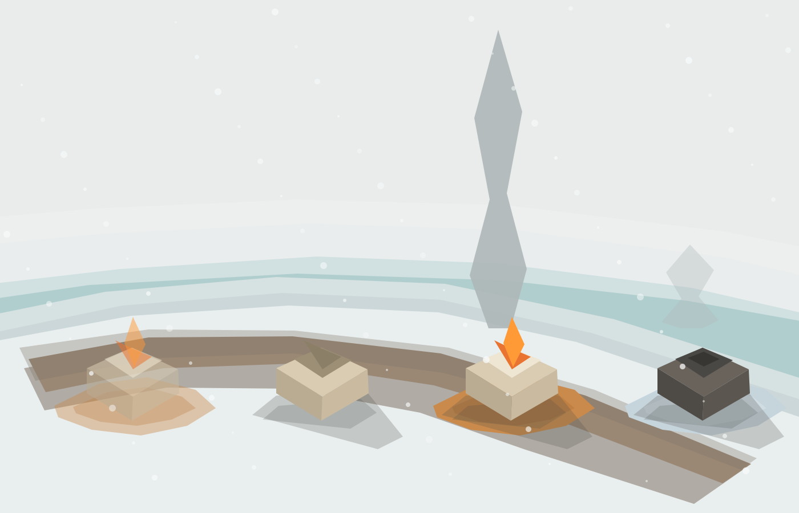

Winter Crisis Reference Plates
Flat-shaded SVG references: shared winter ground, fixed 49-degree map camera, directional shadows, no textures or glow.
01 Wide Master
02 Ground Treatment
03 Frozen Water Boundary
04 Building Three States
05 Fire Smoke Column
06 Falling Snow Density
07 Fire Four States
